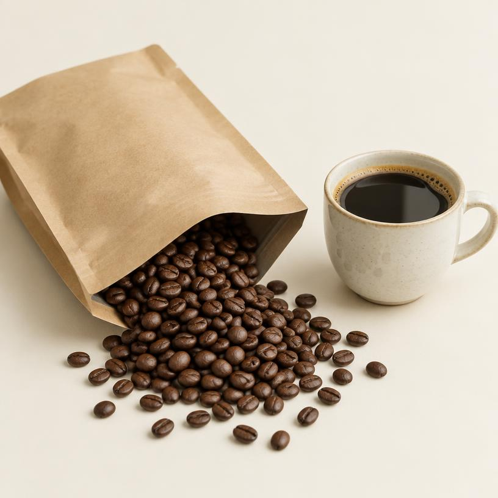
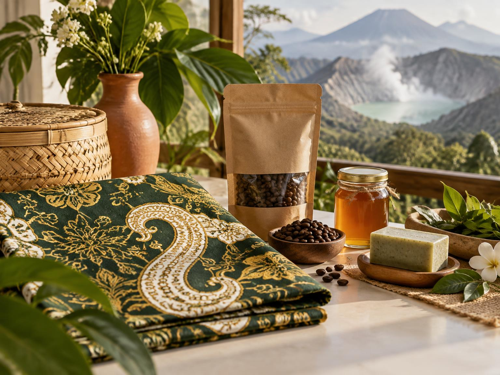
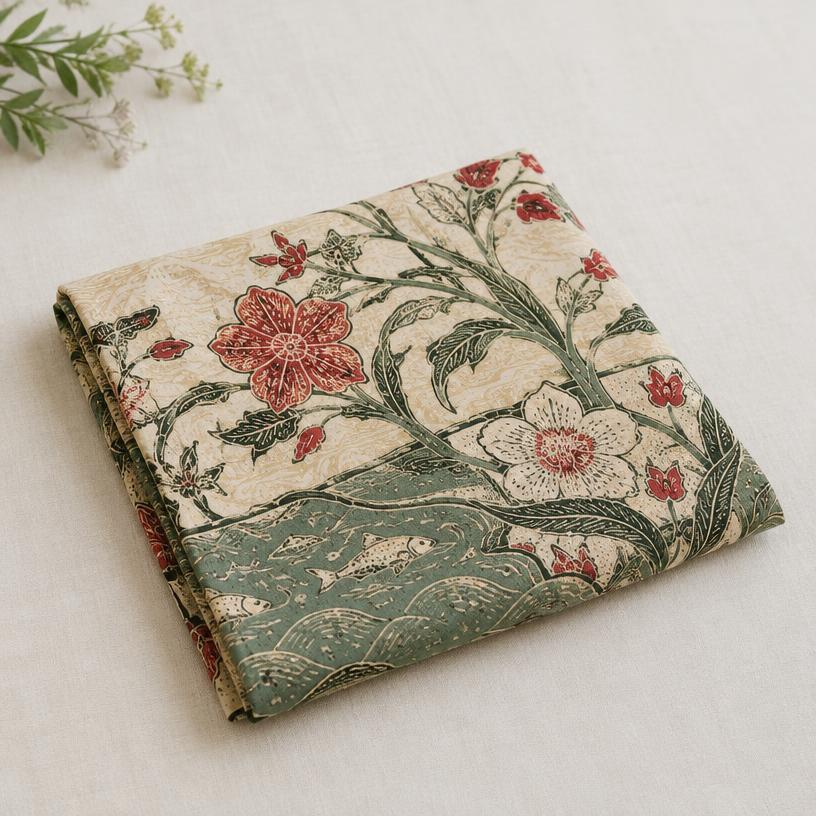
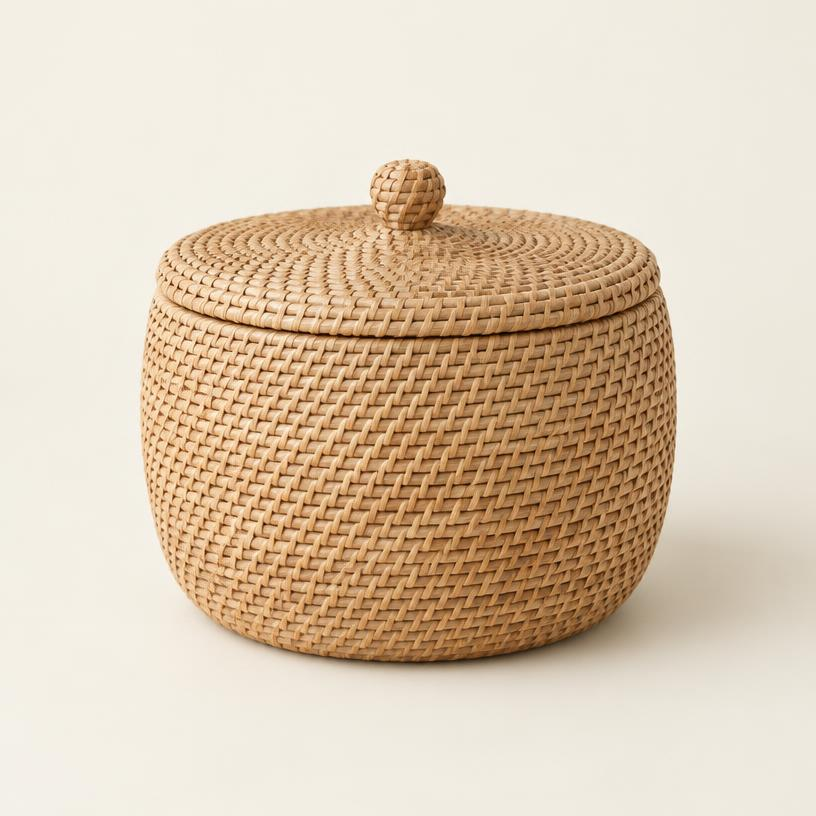
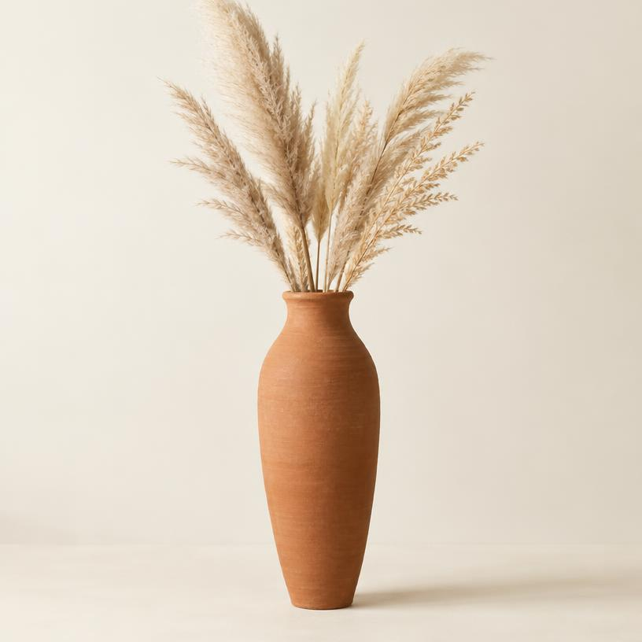

Kopi Robusta Lereng Ijen
Rp85.000
Pusat informasi, direktori, promosi, dan katalog produk UMKM dari 25 kecamatan di Bumi Blambangan.

PILIHAN KAMI
Produk terbaik dari UMKM terverifikasi.




BARU BERGABUNG
UMKM PILIHAN
MENGAPA UMKM BANYUWANGI
Setiap pembelian membantu pelaku usaha di desa.
Produk Anda tampil ke calon pembeli.
Ditemukan dari mana saja.
Tunjukkan kekayaan Blambangan.